Demand is the set of quantities of a good that consumers are willing and able to buy at all corresponding prices over a period of time, other things being constant.
Would pay for the good.
Can afford the good.
Consider each possible price.
Same period; other things stay the same.
Demand is the whole buying plan across all these prices. At one price, the amount buyers are willing and able to buy is quantity demanded.
Want vs demand
Want: a desire to obtain a good, considered without regard to the cost of obtaining it.
Demand: the whole plan of quantities a consumer is willing and able to buy at all corresponding prices over a period.
Example: Mr Wan may want a $5.8 million Lamborghini Huracan STO, but if he cannot afford it, his quantity demanded is zero at the price of $5.8 million.
Demand curve, schedule and law
Demand curve: a graph showing the quantity demanded at each price.
Demand schedule: a table showing the quantity demanded at each price.
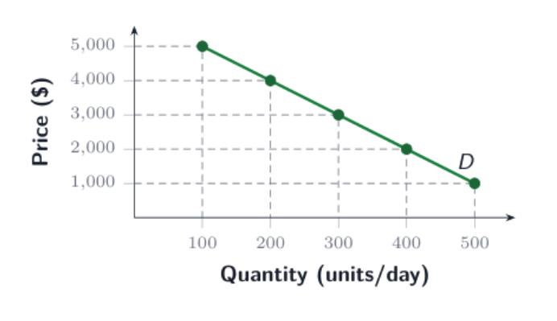
A demand curve plots quantity demanded against price, other things being constant.
Law of demand: an increase in the price of a good will result in a decrease in its quantity demanded, and vice versa, other things being constant.
The law concerns the good's own price and a movement along the same demand curve.
A change in the good's own price moves along a given demand curve. When another factor affecting demand changes, the demand curve shifts.
The law of demand assures other things being constant. First ask whether another factor affecting demand changed.
No: other things stayed the same. Use the law of demand to explain how the good's own price affects quantity demanded.
Yes: another factor also changed. The change in quantity cannot be explained by the price change alone.
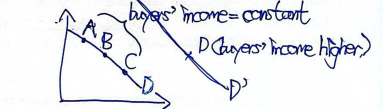
When a factor other than price changes — e.g. buyers' income rises — the whole demand curve shifts rightward.
If price and quantity both rise, this alone does not show a violation of the law of demand.
Market Demand
Individual vs market
Individual demand: the demand of one buyer.
Market demand: the combined demand of all consumers in the market.
Market Qd at price Pi = Consumer A's Qd at Pi + Consumer B's Qd at Pi + all other buyers' Qd at Pi.
Horizontal summation
At each price, add A's and B's quantities demanded. Repeat for every price.
At P1, B buys nothing, so market Qd = QA1.
At P2, market Qd = QA2 + QB1.
B starts buying below P1, so the market curve has a kink at that price.
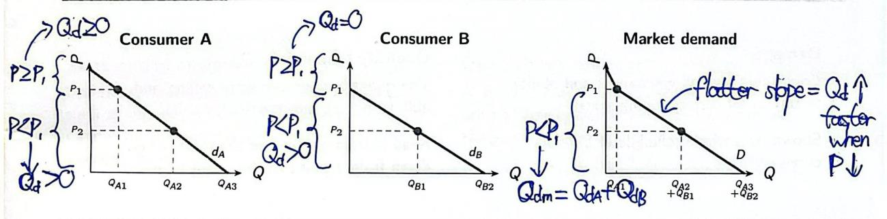
At each price, add A's and B's quantities demanded. The market curve is flatter and has a kink where B enters.
Demand: consumers' overall willingness and ability to buy at all corresponding prices.
Quantity demanded (Qd): the quantity consumers are willing and able to buy at one particular price.
Relative Price
Definitions
Normal price: the price of a good expressed in terms of money.
Relative price: the price of a good expressed in terms of another good.
Relative price of X in terms of Y = normal price of X / normal price of Y.
Relative price tells us how much of Y we give up to get one unit of X.
A decrease in the relative price of Good X in terms of Good Y will result in an increase in the proportion of Good X in the total quantity of X and Y consumed, and vice versa, other things being constant.
If one unit of X costs fewer units of Y, people choose a larger proportion of X, other things being constant.
Proportion means the amount of X as a share of the total amount of X and Y. It does not tell us that the number of units of X must rise.
Example 1 — shipping adds the same $100 to each bottle
Bordeaux prices are $500 for fine wine and $100 for table wine. Shipping either bottle to Hong Kong costs $100. Preferences for wine and table wine are assumed to be the same in both regions.
In Bordeaux, one bottle of fine wine costs five bottles of table wine. In Hong Kong, it costs three.
Fine wine: $500 to $600. The price rises by 100/500 × 100% = 20%.
Table wine: $100 to $200. The price rises by 100/100 × 100% = 100%.
The price of fine wine rises by a smaller percentage. Its relative price in terms of table wine therefore falls. Other things being constant, fine wine makes up a larger proportion of consumption. The average quality is higher.
Example 2 — taxi trips after a rise in flagfall
The flagfall is the starting fare. Suppose it rises from $27 to $29 (ΔPlong = ΔPshort = +$2). Both a long trip and a short trip cost $2 more; other fare charges stay the same.
A long trip costs more to begin with, so the $2 increase is a smaller percentage of its fare.
The relative price of a long trip in terms of a short trip falls.
Other things being constant, long trips make up a larger proportion of all taxi trips. The average distance per trip rises.
Example 3 — visits after a cut in the entrance fee
Compare a long visit (6 hrs = $700 + 6 × $100 = $1,300) and a short visit (2 hrs = $700 + $100 × 2 = $900) to the same tourist spot. ($1,300 / $900 = 1.4×) Both include the same entrance fee. A long visit also takes more time, so it has a higher total cost when time cost is included.
A cut in the entrance fee reduces both total costs by the same amount. (Long visit: 6 hrs = $300 + 6 × $100 = $900. Short visit: $300 + $100 × 2 = $500. $900 / $500 = 1.8×) This is a smaller percentage fall for the long visit.
The relative cost of a long visit in terms of a short visit rises.
Other things being constant, long visits make up a smaller proportion of all visits. The average length of a visit falls.
Supply
Definition
Supply is the set of quantities of a good that producers are willing and able to sell at all corresponding prices over a period of time, other things being constant.
At one price, the amount sellers are willing and able to sell is called quantity supplied (Qs).
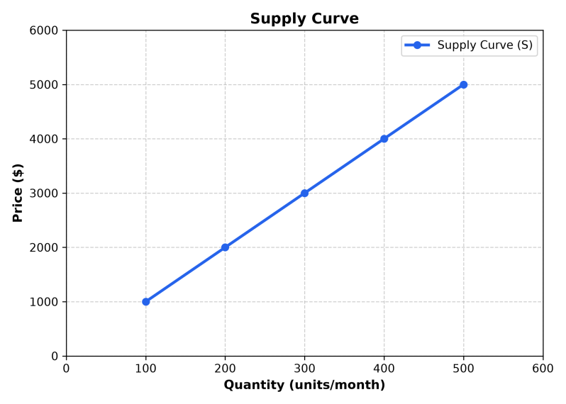
The supply curve plots quantity supplied against price, other things being constant.
Supply schedule example
Price ($)
Qs per month
1000
100
2000
200
3000
300
4000
400
5000
500
Individual vs market supply
Individual supply: the supply of one seller.
Market supply: the combined supply of all sellers in the market.
Qs(Pi) = Qs,A(Pi) + Qs,B(Pi) + … + Qs,n(Pi).
Pi means the price we are looking at; A, B, ..., n are the sellers. At this same price, add the quantities they are willing and able to sell. Repeat for each price. This is horizontal summation.
Law of supply
An increase in the price of a good will result in an increase in its quantity supplied, and vice versa, other things being constant.
Higher price → more revenue for each unit sold → sellers are more willing to sell → higher quantity supplied.
Three points to remember about supply
Willing and able: a shop may be willing to sell face masks. If it has run out, it cannot sell any at that time.
Whole curve vs one point: supply is the whole plan at all prices; Qs is the planned quantity at one price.
Same time period and conditions: use the same time period. Along one supply curve, other things affecting supply stay the same. A change in the good's own price changes quantity supplied along the curve; a change in another factor affecting supply shifts the curve.
Market Equilibrium
Excess demand and excess supply
Quantity demanded (Qd): what buyers are willing and able to buy at this price.
Quantity supplied (Qs): what sellers are willing and able to sell at this price.
Quantity transacted (Qt): the quantity actually bought and sold.
Qt = min{Qd, Qs}.
If Qs > Qd, sellers offer fewer units than buyers plan to buy… here sellers offer more than buyers plan to buy, so Qt = Qd. If Qd > Qs, buyers plan more than sellers offer, so Qt = Qs.
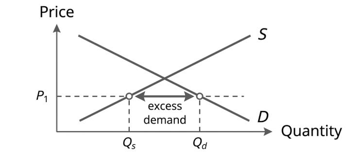
When price is below equilibrium, Qd > Qs. Only Qs is actually transacted.
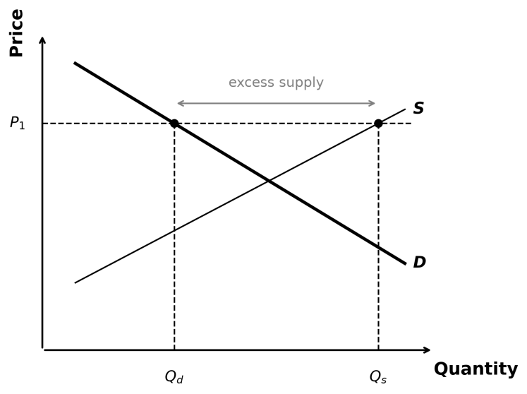
When price is above equilibrium, Qs > Qd. Only Qd is actually transacted.
Market equilibrium
A state in which quantity demanded equals quantity supplied and there is no tendency for the price to change.
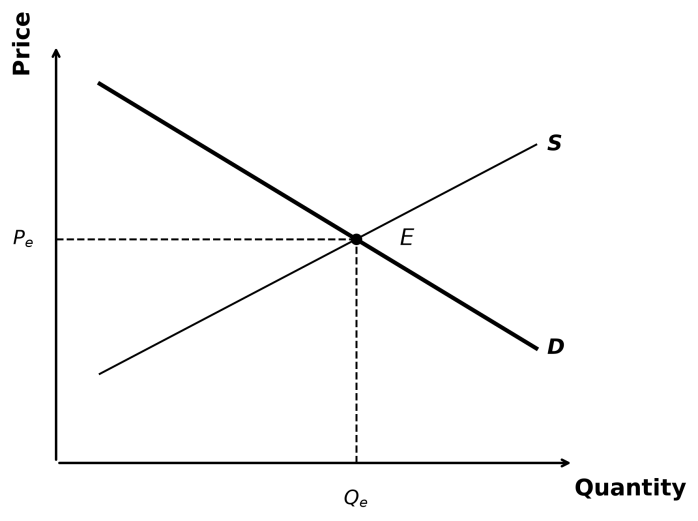
At equilibrium, Qd = Qs = Qe, and there is no tendency for the price to change.
Equilibrium price (Pe): the market-clearing price where Qd = Qs.
Equilibrium quantity (Qe): the quantity demanded and supplied at Pe.
At equilibrium, planned quantities equal actual sales:
Qd = Qs = Qe = Qtransacted.
Buyers can buy the quantity they planned; sellers can sell the quantity they planned.
Excess Demand & Supply
Excess demand
The excess of quantity demanded over quantity supplied. It occurs when price is below equilibrium (+ reason of shortage).
excess demand = Qd − Qs
Qtransacted = Qs
With excess demand, quantity transacted is Qs.
At price P1 < Pe:
Qd > Qs
Qtransacted = min(Qd, Qs) = Qs
Sellers offer the smaller quantity, Qs. Buyers can buy only this amount.
Excess demand is also called a shortage.
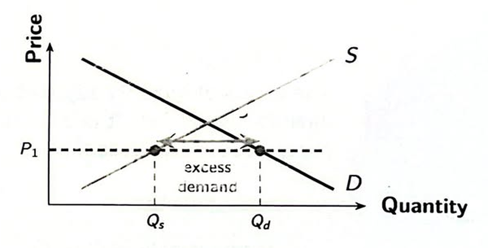
At price P1 < Pe, Qd > Qs. The quantity transacted is Qs.
What we may see
long queues for certain products;
black markets or touts (people who resell tickets at a higher price);
traffic congestion (traffic jams).
Excess supply
The excess of quantity supplied over quantity demanded. It occurs when price is above equilibrium.
excess supply = Qs − Qd
Qtransacted = Qd
With excess supply, some goods remain unsold.
At price P1 > Pe:
Qd < Qs
Qtransacted = min(Qd, Qs) = Qd
Buyers plan to buy the smaller quantity, Qd. Sellers can sell only this amount.
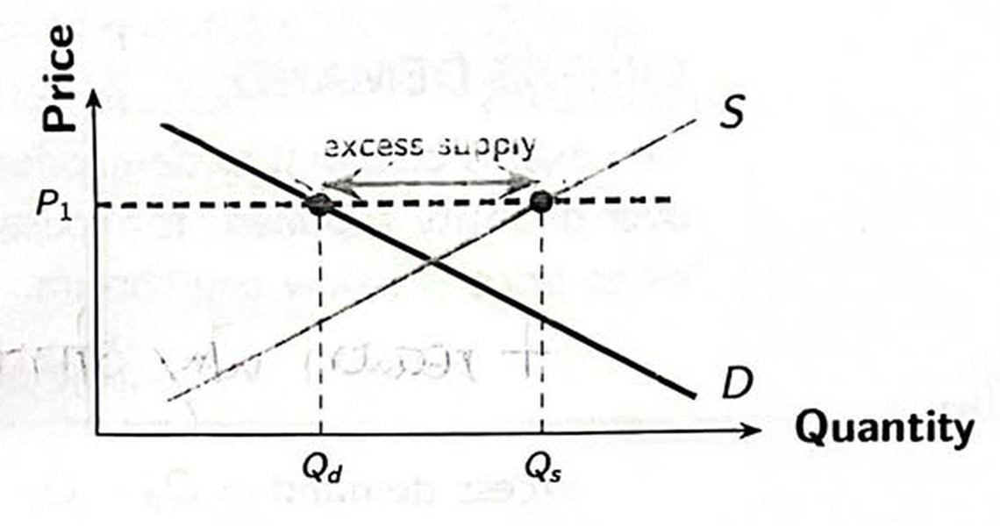
At price P1 > Pe, Qs > Qd. The quantity transacted is Qd.
What we may see
empty seats on a flight;
empty rooms in a hotel;
a build-up of unsold stock that sellers did not want to keep.
min(Qd, Qs) means the smaller of the two quantities. Excess supply is also called a surplus.
Compare the two quantities at the given price
Price above Pe
Price below Pe
Planned quantities
Qs > Qd
Qd > Qs
Market situation
Excess supply
Excess demand
Amount of excess supply or demand
Qs − Qd
Qd − Qs
Quantity transacted
Qd
Qs
General rule
Qtransacted = min(Qd, Qs)
Qtransacted = min(Qd, Qs)
How much is bought and sold?
At the given price, read Qd from the demand curve and Qs from the supply curve. The quantity transacted is the smaller of the two.
Keep buying plans, selling plans and actual sales clear
Concept
Buyer side
Seller side
All prices
Demand
Supply
One price
Quantity demanded, Qd
Quantity supplied, Qs
At equilibrium
Qd = Qs = Qe = Qtransacted
Qd = Qs = Qe = Qtransacted
Above or below equilibrium price
Qtransacted = min(Qd, Qs)
Qtransacted = min(Qd, Qs)
Remember
The whole curve shows the plan at all prices. A point gives the quantity planned at one price. Quantity transacted is the amount actually bought and sold.
Scarcity and shortage compare different things
Scarcity
Resources available are insufficient to satisfy all wants.
Wants are considered without regard to the cost of obtaining the good.
It is a general economic problem.
Shortage
Quantity demanded exceeds quantity supplied at a specified price.
A shortage depends on the given price.
At this price, buyers plan to buy more than sellers offer.
A scarce good can still be in excess supply
Comparison
Scarcity
Shortage
What is compared?
Resources and all wants
Qd and Qs at a specified price
Depends on a specified price?
No
Yes
Necessarily a market disequilibrium?
No
Yes
Can exist at market equilibrium?
Yes
No
Excess supply only means that some sellers cannot sell all units they plan to sell at that price. It does not mean resources can satisfy all wants.
The graph shows shortage, not scarcity
Economic good → scarcity → competition (e.g. require a price to obtain)
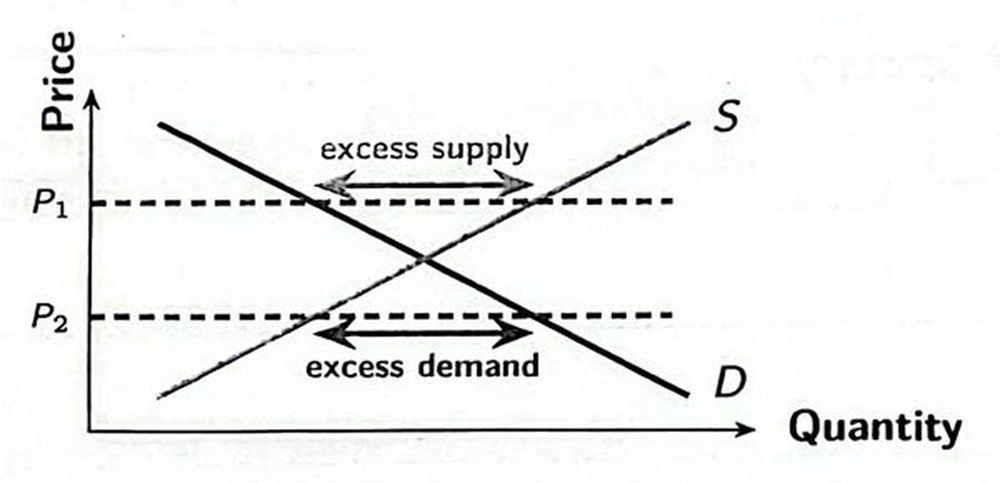
The graph compares shortage and surplus at different prices. It does not represent scarcity.
What the graph cannot mark
Scarcity is not represented by a point, line or area on a demand–supply diagram.
At each price, the diagram compares what buyers plan to buy with what sellers plan to sell. It does not show whether resources can satisfy all wants.
Demand and Quantity Demanded
Demand
Buyers' overall willingness and ability to buy at all prices.
On a graph: the whole demand curve.
Quantity demanded, Qd
The quantity buyers are willing and able to buy at one particular price.
On a graph: one point on a demand curve.
What changes?
Does the whole buying plan change, or do buyers choose another quantity because the price changes?
A Price Change Moves Us Along the Demand Curve
Change in quantity demanded
A change in the quantity consumers are willing and able to buy due to a change in the price of the good(ΔQd)/(ΔP), given that other factors remain constant.
The price of this good changes. Other factors stay the same.
Buyers choose a different quantity from the same buying plan.
On the graph, move to another point on the same demand curve.
How to describe the change
Quantity demanded increases or decreases. The demand curve stays in the same position.
Movement Along a Demand Curve
Price falls: Qd increases
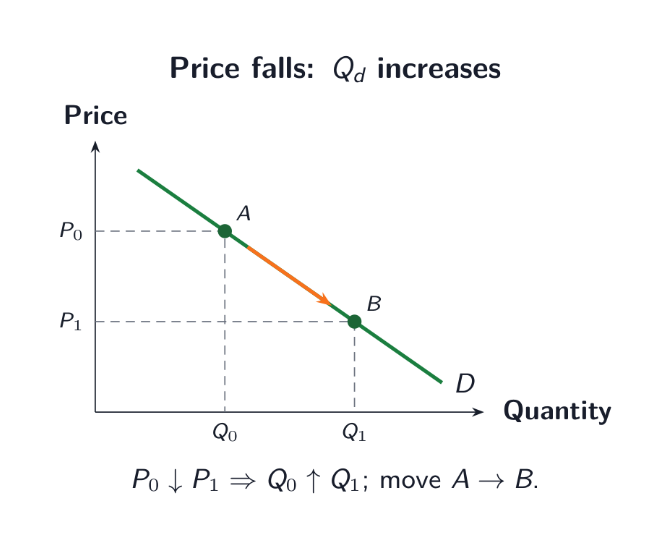
P0 ↓ P1 ⇒ Q0 ↑ Q1; move A → B.
Price rises: Qd decreases
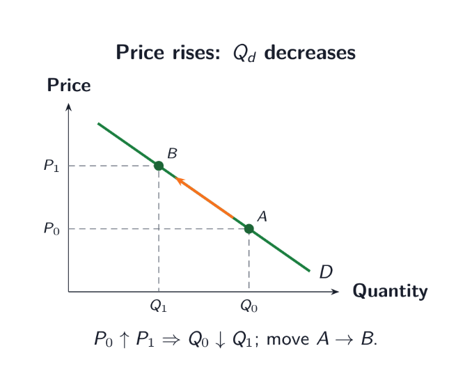
P0 ↑ P1 ⇒ Q0 ↓ Q1; move A → B.
A Change in Demand Shifts the Whole Curve
Change in demand
Changes in every quantity demanded at its corresponding price due to a change in a factor other than the price of the good (e.g. buyers' income).
A factor other than this good's price changes. Buyers now plan to buy a different quantity at every price.
Compare quantities at the same price
Even if the price stays the same, buyers now plan to buy more or less. The whole demand curve shifts.
A Demand Shift Changes Qd at Every Price
Increase in demand
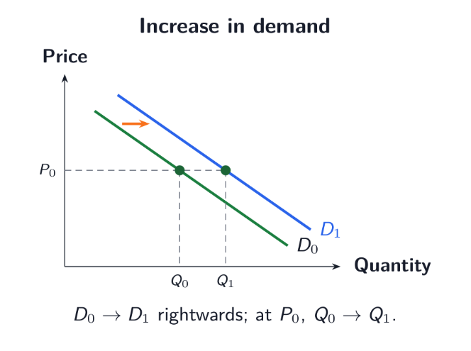
D0 → D1 rightwards; at P0, Q0 → Q1.
Decrease in demand
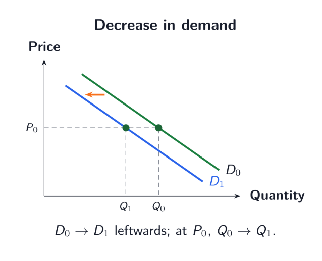
D0 → D1 leftwards; at P0, Q0 → Q1.
Movement Along the Demand Curve or a Shift?
Change in quantity demanded
Change in demand
Cause
The good's own price changes
A factor other than the good's price changes
What changes?
A different quantity as the price changes
A different quantity at every price
Graph
Movement along the same demand curve
Shift of the whole demand curve
Wording
Qd increases / decreases
Demand increases / decreases
Start with the cause
Did the good's own price change, or did another factor change?
What Stays Unchanged Along a Demand Curve?
We want to see how this good's price affects quantity demanded.
Keep these factors unchanged
Factors that change how much buyers want to buy at the same price.
For example, a change in buyers' income can shift demand.
These factors may change
Factors that affect quantity demanded only by changing this good's price.
For example, a change in production cost can shift supply and change the market price.
In the second case, buyers choose another quantity on the same demand curve.
Input price→
no direct effect
Qd
Input price→P decreases→Qd
Supply and Quantity Supplied
Supply
Producers' willingness and ability to sell at every given price.
On a graph: the whole supply curve.
Quantity supplied, Qs
The quantity producers are willing and able to sell at one particular price.
On a graph: one point on a supply curve.
What changes?
Does the whole selling plan change, or do sellers choose another quantity because the price changes?
A Price Change Moves Us Along the Supply Curve
Change in quantity supplied
A change in the quantity producers are willing and able to sell due to a change in the price of the good, given that other factors remain constant.
The price of this good changes. Other factors stay the same.
Sellers choose a different quantity from the same selling plan.
On the graph, move to another point on the same supply curve.
How to describe the change
Quantity supplied increases or decreases. The supply curve stays in the same position.
Movement Along a Supply Curve
Price rises: Qs increases
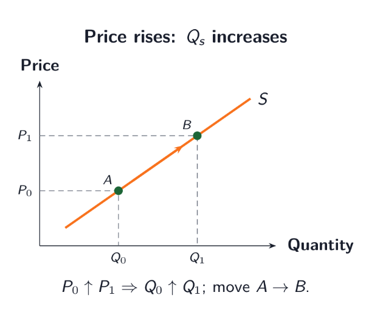
P0 ↑ P1 ⇒ Q0 ↑ Q1; move A → B.
Price falls: Qs decreases
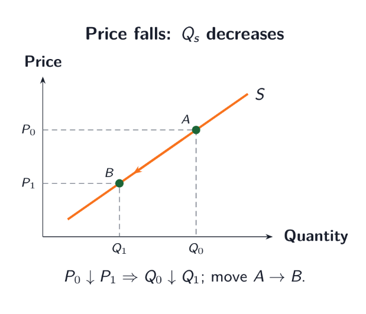
P0 ↓ P1 ⇒ Q0 ↓ Q1; move A → B.
A Change in Supply Shifts the Whole Curve
Change in supply
A change in every quantity supplied at its corresponding price due to a factor other than the product's price.
A factor other than this good's price changes. Sellers now plan to sell a different quantity at every price.
Compare quantities at the same price
Even if the price stays the same, sellers now plan to sell more or less. The whole supply curve shifts.
A Supply Shift Changes Qs at Every Price
Increase in supply
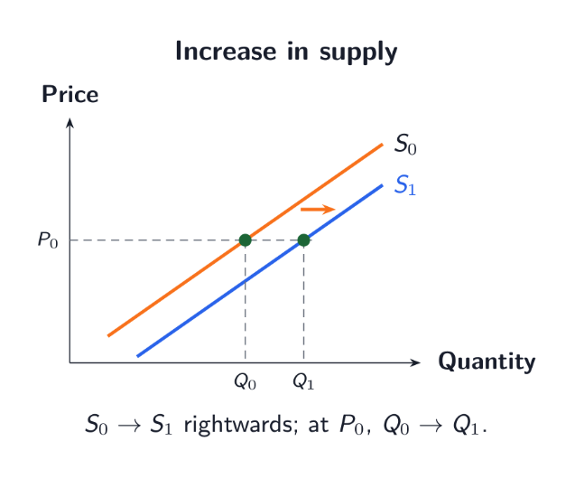
S0 → S1 rightwards; at P0, Q0 → Q1.
Decrease in supply
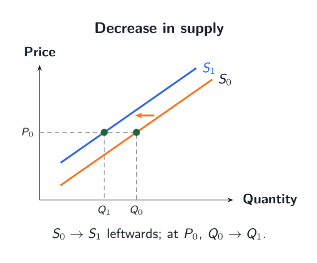
S0 → S1 leftwards; at P0, Q0 → Q1.
Movement Along the Supply Curve or a Shift?
Change in quantity supplied
Change in supply
Cause
The good's own price changes
A factor other than the good's price changes
What changes?
A different quantity as the price changes
A different quantity at every price
Graph
Movement along the same supply curve
Shift of the whole supply curve
Wording
Qs increases / decreases
Supply increases / decreases
Start with the cause
Did the good's own price change, or did another factor change?
How Does Income Affect Demand?
Normal goods
Demand increases when buyers' income increases, and decreases when income decreases.
Positive relationship: income and demand change in the same direction.
e.g. Deluxe lunch set: income increases → Dnormal increases
Inferior goods
Demand decreases when buyers' income increases, and increases when income decreases.
Inverse relationship: income and demand change in opposite directions.
e.g. Fast food: income increases → Dinferior
It depends on the buyer
A product may be normal for one buyer but inferior for another.
e.g. student → bus/MTR
e.g. executive level worker → Uber/taxi
e.g. super rich → private car + private driver
Substitutes Replace One Another
Substitutes / competitive demand
Goods that satisfy similar wants and can be used to replace each other.
Price of Vita Lemon Tea ↑→Qd of Vita Lemon Tea ↓→Demand for Hi-C Lemon Tea ↑
What happens to the other good?
A higher price of Good X raises demand for its substitute, Good Y; a lower price of X reduces demand for Y.
Price of gaming laptop increases→Qd of gaming laptop decreases→Demand for video game console increases
For Substitutes, Ask What Changes First
Good X and Good Y are substitutes: buyers can use one in place of the other.
The price of X rises
Suppose the price rise is not caused by a change in demand for X.
Buyers buy less X and turn to Y. Demand for Y increases.
Demand for X falls
Buyers may find that X's quality is poorer than expected and turn to Y. Demand for Y increases.
The fall in demand for X also lowers its price. Here X's price falls, but demand for Y rises.
If demand for X increases instead, buyers turn away from Y, so demand for Y decreases.
Complements Tend to Be Used Together
Complements / joint demand
Goods that tend to be used together, such as a DVD and DVD player or an ink cartridge and printer.
Price of DVDs ↑→Qd of DVDs ↓→Demand for DVD players ↓
When the price changes
A higher price of Good X reduces demand for its complement, Good Y; a lower price of X raises demand for Y.
If demand for X itself increases, demand for its complement Y also increases, even though X's price may rise. If demand for X falls, demand for Y also falls.
Why Does More Tuition Increase Demand for Teachers?
Derived demand
Demand for Good X is regarded as a derived demand for Good Y when X is a factor of production used to produce Y.
Doutput increases → Dinput increases
Demand for cram-school tuition ↑ buyers = parents/students→More tuition lessons are provided→Demand for cram-school teachers ↑ buyers = cram school
Another example
When demand for bus services increases, bus companies need more drivers. Lower demand for bus services also lowers demand for drivers. The demand for bus drivers is a derived demand.
How Are the Two Goods Related?
Relationship
Link between the goods
What changes?
Substitutes
Satisfy similar wants; replace one another
Price of X ↑⇒ demand for Y ↑
Complements
Tend to be used together in consumption
Price of X ↑⇒ demand for Y ↓
Derived demand
X is a resource used to produce Y
Demand for Y ↑⇒ demand for X ↑
Explain the relationship
Can one good replace the other? Are they used together? Or is one used to produce the other?
Buyers May Buy Now If They Expect a Higher Price Later
Buyers expect future price ↑→Buyers can save money by buying now→Current demand ↑
Which demand curve shifts?
Buyers expect the price to rise later, so their demand increases now.
Whose expectation changes?
Buyers' expectations shift demand; sellers' expectations about future price shift current supply.
Buyers expect future price ≠ current market price
Competitive Supply Uses Similar Resources
Competitive supply
Good X and Good Y are in competitive supply if an increase (a decrease) in the price of X leads to a decrease (an increase) in the supply of Y.
Price of residential buildings ↑→Qs of residential buildings ↑→More land goes to residential buildings→Supply of commercial buildings ↓
Why does commercial supply fall?
Land used for residential buildings cannot also be used for commercial buildings.
Joint Supply: Two Goods Are Produced Together
Joint supply
Good X and Good Y are in joint supply if a higher price of X leads to an increase in the supply of Y. A lower price of X leads to a decrease in the supply of Y.
Price of cream ↑→More cream is produced from raw milk→Supply of skim milk ↑
Whole milk→cream & skim milk
Why is more skim milk supplied?
Separating raw milk gives both cream and skim milk. Producing more cream this way also gives more skim milk.
Compare Competitive Supply and Joint Supply
Competitive supply
Joint supply
Production
X and Y compete for similar resources
X and Y are produced together
If the price of X rises
More X is supplied, leaving fewer resources for Y. Supply of Y decreases.
More X is produced, so more Y is also produced. Supply of Y increases.
Example
Residential vs commercial buildings
Cream and skim milk
Explain what happens in production
Does producing more X leave fewer resources for Y, or does it also produce more Y?
Higher Production Costs Reduce Supply
Price of a resource used in production ↑→Cost of producing the good ↑→Supply of the good ↓
On the graph
The supply curve shifts left. Marginal cost is the extra cost of producing one more unit. In the later cost topic, we will see how a rise in marginal cost shifts the supply curve left.
Reverse case
A lower factor price lowers production cost and increases supply.
What Changes First: Input Price or Demand for Output?
An input is a resource used in production. The output is the good or service produced.
Input→
cost of production
Output
Output→
derived demand
Input
The input price rises
The resource costs more, so producing the good costs more.
Supply of the good decreases.
Look at the market for the good being produced.
Demand for the output rises
Producers need more resources to produce more of the good.
Derived demand for the input increases.
Look at the market for the resource.
Sellers May Wait If They Expect a Higher Price Later
Sellers expect car prices to rise later→They keep some cars to sell later→Current supply of cars decreases
Why wait?
Sellers offer fewer cars for sale now because they expect to get a higher price later.
Buyers and sellers respond differently
Buyers' expected future price affects current demand; sellers' expected future price affects current supply.